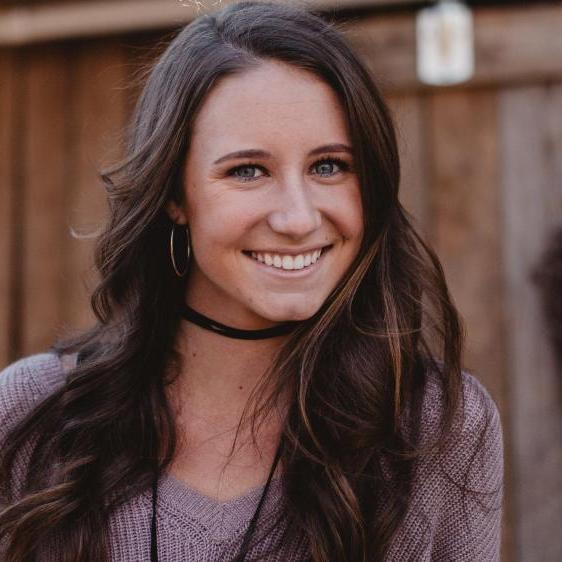

An up-and-coming artist from Geelong, she grew up in a family with a long tradition in
dance. However, she is determined to escape her family's shadow and make a name for herself
in the world. She co-founded The Quad with Kelly in their final year at Deakin, and she is
the troupe's artistic director.
Kelly
An ecologist-turn-artist, she wants to find new and creative ways to convey the crucial
implications of what she had learned from ecology to the general public, and she has found
it in dance. She joined Alex to realize her vision as The Quad's choreographer.
Josh
At first, he thought of dance as just a hobby to relax after stressful study hours as an IT
student. Little did he know he would become so enthralled by the art of dancing that it
became his full-time profession after graduation. Even though he came from a technical
background, his unique viewpoint sometimes amazes the whole troupe.

Mary
Kelly's best friend and fellow environmental activist, she produces music specially composed
for the troupe's performances. Her talents for both music and dance have created
awe-inspiring musical pieces that captured the imagination of both fellow troupe members and
audiences alike.
We are a group of recent graduates from the University of Deakin at Geelong, and we are as
passionate about dance as we are about the environment. That's why our performances, as varied as
they are, all have one unifying theme: That we human race must and can act to protect this Earth for
ourselves and our generations. This is our message to the world, and we are on a mission to spread
it as widely as we can, through the beautiful language of body movements.
Our Style
We are always on the lookout for novel and innovative ways to convey our message, and we will never
stop re-inventing ourselves.
At the moment, we find contemporary dance to be the style that we could best express ourselves in,
but there is no guarantee we would not perform classical ballet tomorrow!
In the meantime, let's enjoy a piece of music that would be a central theme of our newest show,
lovingly prepared for you by our very own Mary the music producer!
Our Shows
Below is a list of our upcoming shows. See you there!
Date
Show
Place
01/06
Hear the Earth cries
Geelong Performing Arts Centre
12/06
Heatpocalypse
Wyndham Cultural Centre
27/06
Hear the Earth cries
Wyndham Cultural Centre
15/07
When will we stop?
Geelong Performing Arts Centre
30/07
Heatpocalypse
The Southern Peninsula Arts Centre
But that's not all. Remember to check this site regularly to not miss any of our latest creations,
made for you with love!